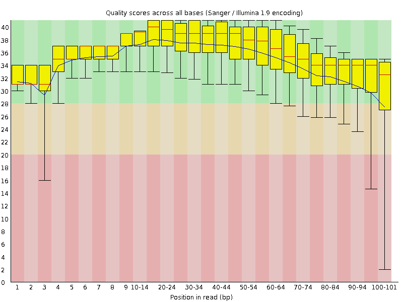

![[OK]](Icons/tick.png) Basic Statistics
Basic Statistics
| Measure | Value |
|---|---|
| Filename | ERR361062_1.fastq |
| File type | Conventional base calls |
| Encoding | Sanger / Illumina 1.9 |
| Total Sequences | 61570072 |
| Filtered Sequences | 0 |
| Sequence length | 101 |
| %GC | 48 |
Per base sequence quality

Per sequence quality scores
![[FAIL]](Icons/error.png) Per base sequence content
Per base sequence content
Per base GC content
Per sequence GC content
Per base N content

Sequence Length Distribution

Sequence Duplication Levels
Overrepresented sequences
No overrepresented sequences
![[WARN]](Icons/warning.png) Kmer Content
Kmer Content
| Sequence | Count | Obs/Exp Overall | Obs/Exp Max | Max Obs/Exp Position |
|---|---|---|---|---|
| GAAGA | 14921190 | 2.5478992 | 5.0140715 | 2 |
| AAAAA | 17151470 | 2.542957 | 8.144015 | 2 |
| TCTTC | 15566525 | 2.525584 | 5.6058207 | 7 |
| CCAGG | 13097760 | 2.4886234 | 5.616434 | 8 |
| CCAGC | 12757035 | 2.382501 | 5.7561364 | 8 |
| TTTTT | 16246780 | 2.3427186 | 5.151919 | 2 |
| CTGGG | 12174790 | 2.3403752 | 5.998491 | 1 |
| CTGGA | 12870170 | 2.3053546 | 7.013272 | 1 |
| TCCAG | 12968885 | 2.2833753 | 8.109271 | 7 |
| CTTCA | 13983980 | 2.2814863 | 6.5922384 | 1 |
| CTCCA | 12269040 | 2.1232755 | 7.0772586 | 6 |
| TCCTG | 11983090 | 2.0981014 | 5.722074 | 7 |
| CTGCC | 10924400 | 2.0289152 | 5.674019 | 8 |
| CTGGC | 10588750 | 2.0007365 | 5.1968393 | 1 |
| GAAAA | 12303860 | 1.9577155 | 5.024834 | 1 |
| CCACC | 10335445 | 1.8972899 | 5.7077184 | 8 |
| AAAAT | 12647975 | 1.8648405 | 6.135165 | 3 |
| TCTCC | 10747900 | 1.8497049 | 5.098617 | 7 |
| TTCCA | 11051260 | 1.8030133 | 5.511368 | 6 |
| CTTTT | 11582200 | 1.7715462 | 5.410814 | 1 |
| CTTTG | 10732350 | 1.7715108 | 6.7298307 | 1 |
| CTCAG | 10012135 | 1.7627931 | 5.4588537 | 1 |
| CAAAA | 11207650 | 1.7528466 | 5.538611 | 1 |
| TCTGC | 9900820 | 1.7335199 | 5.8717837 | 7 |
| CTTGG | 9694965 | 1.726962 | 6.1364145 | 1 |
| GGAAA | 9990365 | 1.7059257 | 5.133696 | 1 |
| TCCAC | 8848435 | 1.5313069 | 5.9456744 | 7 |
| TTTGA | 9185240 | 1.4373014 | 5.433541 | 2 |
| TCCAA | 8190085 | 1.3436697 | 5.159006 | 7 |
| ATCCA | 7889085 | 1.2942876 | 6.6559305 | 6 |